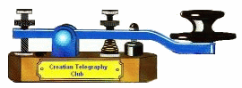

Telegrafiklubb i Kroatien som grundades den 12:e december 2001.
Enda kravet för medlemsskap är att vara en aktiv
radioamatörtelegrafioperatör.
Rekommenderade arbetsfrekvenser: 3.530, 7.015, 14.030, 21.030, och 28.030 MHz.
Tillgänglig E-mailadress:...9a3fo (at) hi.hinet.hr...
Sekreterare:
Mladen Buzic
Franjevacka 5
42220 Novi Marof
Kroatien